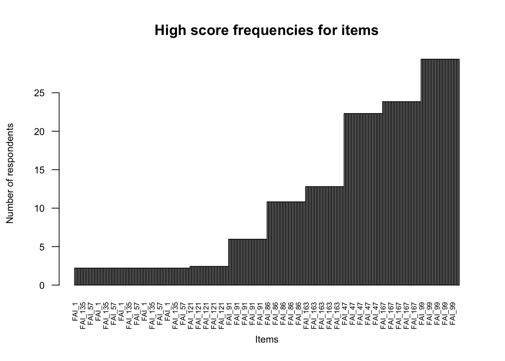

Code
df <- rio::import(here::here("data", "cleaned_data.csv"))La prima fase della selezione degli item e validazione di un questionario riguarda le statistiche descrittive degli item. Nella prima fase dell’analisi, Dima (2018) propone di esaminare gli aspetti seguenti.
df <- rio::import(here::here("data", "cleaned_data.csv"))suppressPackageStartupMessages({
library(tidyverse)
library(here)
library(rio)
library(MASS)
library(corrplot)
library(outliers)
library(performance)
library(see)
library(isotree)
})Seleziono gli item della sottoscala “Problemi comportamentali” dell’Area 1 “Caratterisriche del bambino”.
item_codes <- rio::import(here::here("data", "aree_tematiche_items.csv"))
behav_problems_item_names <- item_codes[6:16, ]$Item_Code
behav_problems_item_names [1] "i86" "i152" "i1" "i47" "i121" "i57" "i167" "i91" "i99" "i135"
[11] "i63" L’item FAI_152 è stato eliminato in precedenza.
selected_columns <- c(
"FAI_86", "FAI_1", "FAI_47", "FAI_121", "FAI_57", "FAI_167",
"FAI_91", "FAI_99", "FAI_135", "FAI_163"
)mydata <- df |>
dplyr::select(all_of(selected_columns))myitems <- names(mydata)
for( n in myitems)
{
cat( "\n", n, ":" );
print( table( mydata[,n], exclude=NULL ) );
}
FAI_86 :
0 1 2 3 4
112 211 81 30 19
FAI_1 :
0 1 2 3 4
303 107 33 7 3
FAI_47 :
0 1 2 3 4
82 129 141 79 22
FAI_121 :
0 1 2 3 4
272 154 16 8 3
FAI_57 :
0 1 2 3 4
323 98 22 7 3
FAI_167 :
0 1 2 3 4
37 114 194 70 38
FAI_91 :
0 1 2 3 4
298 109 19 14 13
FAI_99 :
0 1 2 3 4
25 134 161 54 79
FAI_135 :
0 1 2 3 4
327 85 31 4 6
FAI_163 :
0 1 2 3 4
72 160 163 46 12 Verificare se le variabili sono codificate come numeriche.
class(mydata[, 1])[1] "integer"# File to write the summaries
summaries.file <- here::here("data", "summaries.txt")
# Function to write summary for a variable
write.summary.var <- function(x, xname) {
a1 <- sum(x == 0, na.rm = TRUE)
a2 <- sum(x == 1, na.rm = TRUE)
a3 <- sum(x == 2, na.rm = TRUE)
a4 <- sum(x == 3, na.rm = TRUE)
a5 <- sum(x == 4, na.rm = TRUE)
total_non_na <- sum(!is.na(x)) # Total non-NA values
a6 <- round((sum(x <= 2, na.rm = TRUE) * 100 / total_non_na), 2)
a7 <- round((sum(x > 2, na.rm = TRUE) * 100 / total_non_na), 2)
a8 <- sum(is.na(x))
cat(paste(xname, a1, a2, a3, a4, a5, a6, a7, a8, sep = "\t"), "\n", file = summaries.file, append = TRUE)
}
# 3. For each item, run this function iteratively
for (n in myitems) {
write.summary.var(mydata[, n], n)
}
# Read the table in R
myitemssum <- read.table(
file = here::here("data", "summaries.txt"), header = FALSE,
sep = "\t", quote = "\"")
# 4. Add column names
colnames(myitemssum) <- c("Item label", "0", "1", "2", "3", "4", "% 0 to 2",
"% 2 to 4", "No. missing")
# Verify the result
print(myitemssum) Item label 0 1 2 3 4 % 0 to 2 % 2 to 4 No. missing
1 FAI_86 112 211 81 30 19 89.18 10.82 0
2 FAI_1 303 107 33 7 3 97.79 2.21 0
3 FAI_47 82 129 141 79 22 77.70 22.30 0
4 FAI_121 272 154 16 8 3 97.57 2.43 0
5 FAI_57 323 98 22 7 3 97.79 2.21 0
6 FAI_167 37 114 194 70 38 76.16 23.84 0
7 FAI_91 298 109 19 14 13 94.04 5.96 0
8 FAI_99 25 134 161 54 79 70.64 29.36 0
9 FAI_135 327 85 31 4 6 97.79 2.21 0
10 FAI_163 72 160 163 46 12 87.20 12.80 0
11 FAI_86 112 211 81 30 19 89.18 10.82 0
12 FAI_1 303 107 33 7 3 97.79 2.21 0
13 FAI_47 82 129 141 79 22 77.70 22.30 0
14 FAI_121 272 154 16 8 3 97.57 2.43 0
15 FAI_57 323 98 22 7 3 97.79 2.21 0
16 FAI_167 37 114 194 70 38 76.16 23.84 0
17 FAI_91 298 109 19 14 13 94.04 5.96 0
18 FAI_99 25 134 161 54 79 70.64 29.36 0
19 FAI_135 327 85 31 4 6 97.79 2.21 0
20 FAI_163 72 160 163 46 12 87.20 12.80 0
21 FAI_86 112 211 81 30 19 89.18 10.82 0
22 FAI_1 303 107 33 7 3 97.79 2.21 0
23 FAI_47 82 129 141 79 22 77.70 22.30 0
24 FAI_121 272 154 16 8 3 97.57 2.43 0
25 FAI_57 323 98 22 7 3 97.79 2.21 0
26 FAI_167 37 114 194 70 38 76.16 23.84 0
27 FAI_91 298 109 19 14 13 94.04 5.96 0
28 FAI_99 25 134 161 54 79 70.64 29.36 0
29 FAI_135 327 85 31 4 6 97.79 2.21 0
30 FAI_163 72 160 163 46 12 87.20 12.80 0
31 FAI_86 112 211 81 30 19 89.18 10.82 0
32 FAI_1 303 107 33 7 3 97.79 2.21 0
33 FAI_47 82 129 141 79 22 77.70 22.30 0
34 FAI_121 272 154 16 8 3 97.57 2.43 0
35 FAI_57 323 98 22 7 3 97.79 2.21 0
36 FAI_167 37 114 194 70 38 76.16 23.84 0
37 FAI_91 298 109 19 14 13 94.04 5.96 0
38 FAI_99 25 134 161 54 79 70.64 29.36 0
39 FAI_135 327 85 31 4 6 97.79 2.21 0
40 FAI_163 72 160 163 46 12 87.20 12.80 0
41 FAI_86 112 211 81 30 19 89.18 10.82 0
42 FAI_1 303 107 33 7 3 97.79 2.21 0
43 FAI_47 82 129 141 79 22 77.70 22.30 0
44 FAI_121 272 154 16 8 3 97.57 2.43 0
45 FAI_57 323 98 22 7 3 97.79 2.21 0
46 FAI_167 37 114 194 70 38 76.16 23.84 0
47 FAI_91 298 109 19 14 13 94.04 5.96 0
48 FAI_99 25 134 161 54 79 70.64 29.36 0
49 FAI_135 327 85 31 4 6 97.79 2.21 0
50 FAI_163 72 160 163 46 12 87.20 12.80 0
51 FAI_86 112 211 81 30 19 89.18 10.82 0
52 FAI_1 303 107 33 7 3 97.79 2.21 0
53 FAI_47 82 129 141 79 22 77.70 22.30 0
54 FAI_121 272 154 16 8 3 97.57 2.43 0
55 FAI_57 323 98 22 7 3 97.79 2.21 0
56 FAI_167 37 114 194 70 38 76.16 23.84 0
57 FAI_91 298 109 19 14 13 94.04 5.96 0
58 FAI_99 25 134 161 54 79 70.64 29.36 0
59 FAI_135 327 85 31 4 6 97.79 2.21 0
60 FAI_163 72 160 163 46 12 87.20 12.80 0
61 FAI_86 112 211 81 30 19 89.18 10.82 0
62 FAI_1 303 107 33 7 3 97.79 2.21 0
63 FAI_47 82 129 141 79 22 77.70 22.30 0
64 FAI_121 272 154 16 8 3 97.57 2.43 0
65 FAI_57 323 98 22 7 3 97.79 2.21 0
66 FAI_167 37 114 194 70 38 76.16 23.84 0
67 FAI_91 298 109 19 14 13 94.04 5.96 0
68 FAI_99 25 134 161 54 79 70.64 29.36 0
69 FAI_135 327 85 31 4 6 97.79 2.21 0
70 FAI_163 72 160 163 46 12 87.20 12.80 0
71 FAI_86 112 211 81 30 19 89.18 10.82 0
72 FAI_1 303 107 33 7 3 97.79 2.21 0
73 FAI_47 82 129 141 79 22 77.70 22.30 0
74 FAI_121 272 154 16 8 3 97.57 2.43 0
75 FAI_57 323 98 22 7 3 97.79 2.21 0
76 FAI_167 37 114 194 70 38 76.16 23.84 0
77 FAI_91 298 109 19 14 13 94.04 5.96 0
78 FAI_99 25 134 161 54 79 70.64 29.36 0
79 FAI_135 327 85 31 4 6 97.79 2.21 0
80 FAI_163 72 160 163 46 12 87.20 12.80 0
81 FAI_86 112 211 81 30 19 89.18 10.82 0
82 FAI_1 303 107 33 7 3 97.79 2.21 0
83 FAI_47 82 129 141 79 22 77.70 22.30 0
84 FAI_121 272 154 16 8 3 97.57 2.43 0
85 FAI_57 323 98 22 7 3 97.79 2.21 0
86 FAI_167 37 114 194 70 38 76.16 23.84 0
87 FAI_91 298 109 19 14 13 94.04 5.96 0
88 FAI_99 25 134 161 54 79 70.64 29.36 0
89 FAI_135 327 85 31 4 6 97.79 2.21 0
90 FAI_163 72 160 163 46 12 87.20 12.80 0
91 FAI_86 112 211 81 30 19 89.18 10.82 0
92 FAI_1 303 107 33 7 3 97.79 2.21 0
93 FAI_47 82 129 141 79 22 77.70 22.30 0
94 FAI_121 272 154 16 8 3 97.57 2.43 0
95 FAI_57 323 98 22 7 3 97.79 2.21 0
96 FAI_167 37 114 194 70 38 76.16 23.84 0
97 FAI_91 298 109 19 14 13 94.04 5.96 0
98 FAI_99 25 134 161 54 79 70.64 29.36 0
99 FAI_135 327 85 31 4 6 97.79 2.21 0
100 FAI_163 72 160 163 46 12 87.20 12.80 0
101 FAI_86 112 211 81 30 19 89.18 10.82 0
102 FAI_1 303 107 33 7 3 97.79 2.21 0
103 FAI_47 82 129 141 79 22 77.70 22.30 0
104 FAI_121 272 154 16 8 3 97.57 2.43 0
105 FAI_57 323 98 22 7 3 97.79 2.21 0
106 FAI_167 37 114 194 70 38 76.16 23.84 0
107 FAI_91 298 109 19 14 13 94.04 5.96 0
108 FAI_99 25 134 161 54 79 70.64 29.36 0
109 FAI_135 327 85 31 4 6 97.79 2.21 0
110 FAI_163 72 160 163 46 12 87.20 12.80 0
111 FAI_86 112 211 81 30 19 89.18 10.82 0
112 FAI_1 303 107 33 7 3 97.79 2.21 0
113 FAI_47 82 129 141 79 22 77.70 22.30 0
114 FAI_121 272 154 16 8 3 97.57 2.43 0
115 FAI_57 323 98 22 7 3 97.79 2.21 0
116 FAI_167 37 114 194 70 38 76.16 23.84 0
117 FAI_91 298 109 19 14 13 94.04 5.96 0
118 FAI_99 25 134 161 54 79 70.64 29.36 0
119 FAI_135 327 85 31 4 6 97.79 2.21 0
120 FAI_163 72 160 163 46 12 87.20 12.80 0
121 FAI_86 112 211 81 30 19 89.18 10.82 0
122 FAI_1 303 107 33 7 3 97.79 2.21 0
123 FAI_47 82 129 141 79 22 77.70 22.30 0
124 FAI_121 272 154 16 8 3 97.57 2.43 0
125 FAI_57 323 98 22 7 3 97.79 2.21 0
126 FAI_167 37 114 194 70 38 76.16 23.84 0
127 FAI_91 298 109 19 14 13 94.04 5.96 0
128 FAI_99 25 134 161 54 79 70.64 29.36 0
129 FAI_135 327 85 31 4 6 97.79 2.21 0
130 FAI_163 72 160 163 46 12 87.20 12.80 0
131 FAI_86 112 211 81 30 19 89.18 10.82 0
132 FAI_1 303 107 33 7 3 97.79 2.21 0
133 FAI_47 82 129 141 79 22 77.70 22.30 0
134 FAI_121 272 154 16 8 3 97.57 2.43 0
135 FAI_57 323 98 22 7 3 97.79 2.21 0
136 FAI_167 37 114 194 70 38 76.16 23.84 0
137 FAI_91 298 109 19 14 13 94.04 5.96 0
138 FAI_99 25 134 161 54 79 70.64 29.36 0
139 FAI_135 327 85 31 4 6 97.79 2.21 0
140 FAI_163 72 160 163 46 12 87.20 12.80 0
141 FAI_86 112 211 81 30 19 89.18 10.82 0
142 FAI_1 303 107 33 7 3 97.79 2.21 0
143 FAI_47 82 129 141 79 22 77.70 22.30 0
144 FAI_121 272 154 16 8 3 97.57 2.43 0
145 FAI_57 323 98 22 7 3 97.79 2.21 0
146 FAI_167 37 114 194 70 38 76.16 23.84 0
147 FAI_91 298 109 19 14 13 94.04 5.96 0
148 FAI_99 25 134 161 54 79 70.64 29.36 0
149 FAI_135 327 85 31 4 6 97.79 2.21 0
150 FAI_163 72 160 163 46 12 87.20 12.80 0
151 FAI_86 112 211 81 30 19 89.18 10.82 0
152 FAI_1 303 107 33 7 3 97.79 2.21 0
153 FAI_47 82 129 141 79 22 77.70 22.30 0
154 FAI_121 272 154 16 8 3 97.57 2.43 0
155 FAI_57 323 98 22 7 3 97.79 2.21 0
156 FAI_167 37 114 194 70 38 76.16 23.84 0
157 FAI_91 298 109 19 14 13 94.04 5.96 0
158 FAI_99 25 134 161 54 79 70.64 29.36 0
159 FAI_135 327 85 31 4 6 97.79 2.21 0
160 FAI_163 72 160 163 46 12 87.20 12.80 0
161 FAI_86 112 211 81 30 19 89.18 10.82 0
162 FAI_1 303 107 33 7 3 97.79 2.21 0
163 FAI_47 82 129 141 79 22 77.70 22.30 0
164 FAI_121 272 154 16 8 3 97.57 2.43 0
165 FAI_57 323 98 22 7 3 97.79 2.21 0
166 FAI_167 37 114 194 70 38 76.16 23.84 0
167 FAI_91 298 109 19 14 13 94.04 5.96 0
168 FAI_99 25 134 161 54 79 70.64 29.36 0
169 FAI_135 327 85 31 4 6 97.79 2.21 0
170 FAI_163 72 160 163 46 12 87.20 12.80 0
171 FAI_86 112 211 81 30 19 89.18 10.82 0
172 FAI_1 303 107 33 7 3 97.79 2.21 0
173 FAI_47 82 129 141 79 22 77.70 22.30 0
174 FAI_121 272 154 16 8 3 97.57 2.43 0
175 FAI_57 323 98 22 7 3 97.79 2.21 0
176 FAI_167 37 114 194 70 38 76.16 23.84 0
177 FAI_91 298 109 19 14 13 94.04 5.96 0
178 FAI_99 25 134 161 54 79 70.64 29.36 0
179 FAI_135 327 85 31 4 6 97.79 2.21 0
180 FAI_163 72 160 163 46 12 87.20 12.80 0
181 FAI_86 112 211 81 30 19 89.18 10.82 0
182 FAI_1 303 107 33 7 3 97.79 2.21 0
183 FAI_47 82 129 141 79 22 77.70 22.30 0
184 FAI_121 272 154 16 8 3 97.57 2.43 0
185 FAI_57 323 98 22 7 3 97.79 2.21 0
186 FAI_167 37 114 194 70 38 76.16 23.84 0
187 FAI_91 298 109 19 14 13 94.04 5.96 0
188 FAI_99 25 134 161 54 79 70.64 29.36 0
189 FAI_135 327 85 31 4 6 97.79 2.21 0
190 FAI_163 72 160 163 46 12 87.20 12.80 0
191 FAI_86 112 211 81 30 19 89.18 10.82 0
192 FAI_1 303 107 33 7 3 97.79 2.21 0
193 FAI_47 82 129 141 79 22 77.70 22.30 0
194 FAI_121 272 154 16 8 3 97.57 2.43 0
195 FAI_57 323 98 22 7 3 97.79 2.21 0
196 FAI_167 37 114 194 70 38 76.16 23.84 0
197 FAI_91 298 109 19 14 13 94.04 5.96 0
198 FAI_99 25 134 161 54 79 70.64 29.36 0
199 FAI_135 327 85 31 4 6 97.79 2.21 0
200 FAI_163 72 160 163 46 12 87.20 12.80 0
201 FAI_86 112 211 81 30 19 89.18 10.82 0
202 FAI_1 303 107 33 7 3 97.79 2.21 0
203 FAI_47 82 129 141 79 22 77.70 22.30 0
204 FAI_121 272 154 16 8 3 97.57 2.43 0
205 FAI_57 323 98 22 7 3 97.79 2.21 0
206 FAI_167 37 114 194 70 38 76.16 23.84 0
207 FAI_91 298 109 19 14 13 94.04 5.96 0
208 FAI_99 25 134 161 54 79 70.64 29.36 0
209 FAI_135 327 85 31 4 6 97.79 2.21 0
210 FAI_163 72 160 163 46 12 87.20 12.80 0
211 FAI_86 112 211 81 30 19 89.18 10.82 0
212 FAI_1 303 107 33 7 3 97.79 2.21 0
213 FAI_47 82 129 141 79 22 77.70 22.30 0
214 FAI_121 272 154 16 8 3 97.57 2.43 0
215 FAI_57 323 98 22 7 3 97.79 2.21 0
216 FAI_167 37 114 194 70 38 76.16 23.84 0
217 FAI_91 298 109 19 14 13 94.04 5.96 0
218 FAI_99 25 134 161 54 79 70.64 29.36 0
219 FAI_135 327 85 31 4 6 97.79 2.21 0
220 FAI_163 72 160 163 46 12 87.20 12.80 0
221 FAI_86 112 211 81 30 19 89.18 10.82 0
222 FAI_1 303 107 33 7 3 97.79 2.21 0
223 FAI_47 82 129 141 79 22 77.70 22.30 0
224 FAI_121 272 154 16 8 3 97.57 2.43 0
225 FAI_57 323 98 22 7 3 97.79 2.21 0
226 FAI_167 37 114 194 70 38 76.16 23.84 0
227 FAI_91 298 109 19 14 13 94.04 5.96 0
228 FAI_99 25 134 161 54 79 70.64 29.36 0
229 FAI_135 327 85 31 4 6 97.79 2.21 0
230 FAI_163 72 160 163 46 12 87.20 12.80 0
231 FAI_86 112 211 81 30 19 89.18 10.82 0
232 FAI_1 303 107 33 7 3 97.79 2.21 0
233 FAI_47 82 129 141 79 22 77.70 22.30 0
234 FAI_121 272 154 16 8 3 97.57 2.43 0
235 FAI_57 323 98 22 7 3 97.79 2.21 0
236 FAI_167 37 114 194 70 38 76.16 23.84 0
237 FAI_91 298 109 19 14 13 94.04 5.96 0
238 FAI_99 25 134 161 54 79 70.64 29.36 0
239 FAI_135 327 85 31 4 6 97.79 2.21 0
240 FAI_163 72 160 163 46 12 87.20 12.80 0
241 FAI_86 112 211 81 30 19 89.18 10.82 0
242 FAI_1 303 107 33 7 3 97.79 2.21 0
243 FAI_47 82 129 141 79 22 77.70 22.30 0
244 FAI_121 272 154 16 8 3 97.57 2.43 0
245 FAI_57 323 98 22 7 3 97.79 2.21 0
246 FAI_167 37 114 194 70 38 76.16 23.84 0
247 FAI_91 298 109 19 14 13 94.04 5.96 0
248 FAI_99 25 134 161 54 79 70.64 29.36 0
249 FAI_135 327 85 31 4 6 97.79 2.21 0
250 FAI_163 72 160 163 46 12 87.20 12.80 0descrmyitems <- as.data.frame( round( psych::describe( mydata ), 2 ))
descrmyitems vars n mean sd median trimmed mad min max range skew kurtosis se
FAI_86 1 453 1.19 1.02 1 1.06 1.48 0 4 4 0.95 0.64 0.05
FAI_1 2 453 0.45 0.75 0 0.29 0.00 0 4 4 1.86 3.72 0.04
FAI_47 3 453 1.62 1.11 2 1.60 1.48 0 4 4 0.20 -0.73 0.05
FAI_121 4 453 0.49 0.71 0 0.37 0.00 0 4 4 1.83 4.57 0.03
FAI_57 5 453 0.39 0.71 0 0.23 0.00 0 4 4 2.22 5.64 0.03
FAI_167 6 453 1.91 1.03 2 1.88 1.48 0 4 4 0.20 -0.27 0.05
FAI_91 7 453 0.53 0.93 0 0.31 0.00 0 4 4 2.14 4.43 0.04
FAI_99 8 453 2.06 1.15 2 2.02 1.48 0 4 4 0.34 -0.79 0.05
FAI_135 9 453 0.40 0.77 0 0.22 0.00 0 4 4 2.29 5.89 0.04
FAI_163 10 453 1.48 0.97 1 1.45 1.48 0 4 4 0.30 -0.22 0.05# order items based on percentage based on the 8th column (% high scores)
myitemssumOrder <- myitemssum[order(myitemssum[, 8]),] barplot(myitemssumOrder[,"% 2 to 4"],
main = "High score frequencies for items",
xlab="Items",
ylab="Number of respondents",
cex.lab=0.8,
cex.axis=0.8,
names.arg=myitemssumOrder[, "Item label"],
las=2,
cex.names=0.6)
par( mfrow=c(3,4)) # set several plots per rows and columns
for( n in myitems)
{
distr <- table(mydata[,n])
barplot(distr,
main=n,
col=gray.colors(20),
ylab = "Number of respondents",
xlab = "Response (0=Negative, 4=Positive)");
}# for ordinal items use Spearman correlations
bluesqs <- cor(mydata, method = "spearman")
corrplot(bluesqs, method = "number", main = "Correlations Between Items",
number.cex = 0.5, tl.cex = 0.7)Per l’esame degli outlier useremo le funzionalità del pacchetto performance(Thériault et al. 2024).
Aggiungo la colonna id.
mydata$id <- 1:nrow(mydata) |> as.factor()foo <- mydata |>
dplyr::select(id, FAI_86)
outliers <- check_outliers(foo, method = "zscore_robust", ID = "id")
outliersOK: No outliers detected.
- Based on the following method and threshold: zscore_robust (3.291).
- For variable: FAI_86foo <- mydata |>
dplyr::select(id, FAI_1)
outliers <- check_outliers(foo, method = "zscore_robust", ID = "id")
outliers150 outliers detected: cases 2, 5, 8, 11, 12, 29, 36, 37, 40, 41, 42,
47, 49, 51, 52, 53, 54, 62, 63, 72, 73, 78, 79, 84, 88, 89, 94, 109,
111, 113, 116, 117, 123, 127, 131, 137, 148, 151, 152, 154, 160, 165,
166, 168, 172, 173, 180, 181, 182, 184, 187, 189, 190, 193, 194, 195,
196, 198, 199, 201, 202, 204, 213, 214, 216, 217, 218, 226, 227, 229,
230, 231, 232, 241, 243, 248, 250, 251, 254, 255, 256, 257, 258, 259,
261, 263, 264, 265, 266, 267, 271, 274, 277, 278, 283, 288, 291, 292,
296, 302, 303, 304, 313, 314, 315, 316, 317, 325, 327, 329, 330, 331,
332, 334, 336, 339, 341, 342, 346, 348, 351, 352, 353, 356, 359, 360,
369, 370, 372, 374, 379, 383, 387, 393, 397, 398, 399, 405, 411, 417,
418, 419, 425, 426, 432, 433, 444, 445, 448, 449.
- Based on the following method and threshold: zscore_robust (3.291).
- For variable: FAI_1.
-----------------------------------------------------------------------------
Outliers per variable (zscore_robust):
$FAI_1
Row id Distance_Zscore_robust
NA NA <NA> NA
2 2 2 Inf
NA.1 NA <NA> NA
NA.2 NA <NA> NA
5 5 5 Inf
NA.3 NA <NA> NA
NA.4 NA <NA> NA
8 8 8 Inf
NA.5 NA <NA> NA
NA.6 NA <NA> NA
11 11 11 Inf
12 12 12 Inf
NA.7 NA <NA> NA
NA.8 NA <NA> NA
NA.9 NA <NA> NA
NA.10 NA <NA> NA
NA.11 NA <NA> NA
NA.12 NA <NA> NA
NA.13 NA <NA> NA
NA.14 NA <NA> NA
NA.15 NA <NA> NA
NA.16 NA <NA> NA
NA.17 NA <NA> NA
NA.18 NA <NA> NA
NA.19 NA <NA> NA
NA.20 NA <NA> NA
NA.21 NA <NA> NA
NA.22 NA <NA> NA
29 29 29 Inf
NA.23 NA <NA> NA
NA.24 NA <NA> NA
NA.25 NA <NA> NA
NA.26 NA <NA> NA
NA.27 NA <NA> NA
NA.28 NA <NA> NA
36 36 36 Inf
37 37 37 Inf
NA.29 NA <NA> NA
NA.30 NA <NA> NA
40 40 40 Inf
41 41 41 Inf
42 42 42 Inf
NA.31 NA <NA> NA
NA.32 NA <NA> NA
NA.33 NA <NA> NA
NA.34 NA <NA> NA
47 47 47 Inf
NA.35 NA <NA> NA
49 49 49 Inf
NA.36 NA <NA> NA
51 51 51 Inf
52 52 52 Inf
53 53 53 Inf
54 54 54 Inf
NA.37 NA <NA> NA
NA.38 NA <NA> NA
NA.39 NA <NA> NA
NA.40 NA <NA> NA
NA.41 NA <NA> NA
NA.42 NA <NA> NA
NA.43 NA <NA> NA
62 62 62 Inf
63 63 63 Inf
NA.44 NA <NA> NA
NA.45 NA <NA> NA
NA.46 NA <NA> NA
NA.47 NA <NA> NA
NA.48 NA <NA> NA
NA.49 NA <NA> NA
NA.50 NA <NA> NA
NA.51 NA <NA> NA
72 72 72 Inf
73 73 73 Inf
NA.52 NA <NA> NA
NA.53 NA <NA> NA
NA.54 NA <NA> NA
NA.55 NA <NA> NA
78 78 78 Inf
79 79 79 Inf
NA.56 NA <NA> NA
NA.57 NA <NA> NA
NA.58 NA <NA> NA
NA.59 NA <NA> NA
84 84 84 Inf
NA.60 NA <NA> NA
NA.61 NA <NA> NA
NA.62 NA <NA> NA
88 88 88 Inf
89 89 89 Inf
NA.63 NA <NA> NA
NA.64 NA <NA> NA
NA.65 NA <NA> NA
NA.66 NA <NA> NA
94 94 94 Inf
NA.67 NA <NA> NA
NA.68 NA <NA> NA
NA.69 NA <NA> NA
NA.70 NA <NA> NA
NA.71 NA <NA> NA
NA.72 NA <NA> NA
NA.73 NA <NA> NA
NA.74 NA <NA> NA
NA.75 NA <NA> NA
NA.76 NA <NA> NA
NA.77 NA <NA> NA
NA.78 NA <NA> NA
NA.79 NA <NA> NA
NA.80 NA <NA> NA
109 109 109 Inf
NA.81 NA <NA> NA
111 111 111 Inf
NA.82 NA <NA> NA
113 113 113 Inf
NA.83 NA <NA> NA
NA.84 NA <NA> NA
116 116 116 Inf
117 117 117 Inf
NA.85 NA <NA> NA
NA.86 NA <NA> NA
NA.87 NA <NA> NA
NA.88 NA <NA> NA
NA.89 NA <NA> NA
123 123 123 Inf
NA.90 NA <NA> NA
NA.91 NA <NA> NA
NA.92 NA <NA> NA
127 127 127 Inf
NA.93 NA <NA> NA
NA.94 NA <NA> NA
NA.95 NA <NA> NA
131 131 131 Inf
NA.96 NA <NA> NA
NA.97 NA <NA> NA
NA.98 NA <NA> NA
NA.99 NA <NA> NA
NA.100 NA <NA> NA
137 137 137 Inf
NA.101 NA <NA> NA
NA.102 NA <NA> NA
NA.103 NA <NA> NA
NA.104 NA <NA> NA
NA.105 NA <NA> NA
NA.106 NA <NA> NA
NA.107 NA <NA> NA
NA.108 NA <NA> NA
NA.109 NA <NA> NA
NA.110 NA <NA> NA
148 148 148 Inf
NA.111 NA <NA> NA
NA.112 NA <NA> NA
151 151 151 Inf
152 152 152 Inf
NA.113 NA <NA> NA
154 154 154 Inf
NA.114 NA <NA> NA
NA.115 NA <NA> NA
NA.116 NA <NA> NA
NA.117 NA <NA> NA
NA.118 NA <NA> NA
160 160 160 Inf
NA.119 NA <NA> NA
NA.120 NA <NA> NA
NA.121 NA <NA> NA
NA.122 NA <NA> NA
165 165 165 Inf
166 166 166 Inf
NA.123 NA <NA> NA
168 168 168 Inf
NA.124 NA <NA> NA
NA.125 NA <NA> NA
NA.126 NA <NA> NA
172 172 172 Inf
173 173 173 Inf
NA.127 NA <NA> NA
NA.128 NA <NA> NA
NA.129 NA <NA> NA
NA.130 NA <NA> NA
NA.131 NA <NA> NA
NA.132 NA <NA> NA
180 180 180 Inf
181 181 181 Inf
182 182 182 Inf
NA.133 NA <NA> NA
184 184 184 Inf
NA.134 NA <NA> NA
NA.135 NA <NA> NA
187 187 187 Inf
NA.136 NA <NA> NA
189 189 189 Inf
190 190 190 Inf
NA.137 NA <NA> NA
NA.138 NA <NA> NA
193 193 193 Inf
194 194 194 Inf
195 195 195 Inf
196 196 196 Inf
NA.139 NA <NA> NA
198 198 198 Inf
199 199 199 Inf
NA.140 NA <NA> NA
201 201 201 Inf
202 202 202 Inf
NA.141 NA <NA> NA
204 204 204 Inf
NA.142 NA <NA> NA
NA.143 NA <NA> NA
NA.144 NA <NA> NA
NA.145 NA <NA> NA
NA.146 NA <NA> NA
NA.147 NA <NA> NA
NA.148 NA <NA> NA
NA.149 NA <NA> NA
213 213 213 Inf
214 214 214 Inf
NA.150 NA <NA> NA
216 216 216 Inf
217 217 217 Inf
218 218 218 Inf
NA.151 NA <NA> NA
NA.152 NA <NA> NA
NA.153 NA <NA> NA
NA.154 NA <NA> NA
NA.155 NA <NA> NA
NA.156 NA <NA> NA
NA.157 NA <NA> NA
226 226 226 Inf
227 227 227 Inf
NA.158 NA <NA> NA
229 229 229 Inf
230 230 230 Inf
231 231 231 Inf
232 232 232 Inf
NA.159 NA <NA> NA
NA.160 NA <NA> NA
NA.161 NA <NA> NA
NA.162 NA <NA> NA
NA.163 NA <NA> NA
NA.164 NA <NA> NA
NA.165 NA <NA> NA
NA.166 NA <NA> NA
241 241 241 Inf
NA.167 NA <NA> NA
243 243 243 Inf
NA.168 NA <NA> NA
NA.169 NA <NA> NA
NA.170 NA <NA> NA
NA.171 NA <NA> NA
248 248 248 Inf
NA.172 NA <NA> NA
250 250 250 Inf
251 251 251 Inf
NA.173 NA <NA> NA
NA.174 NA <NA> NA
254 254 254 Inf
255 255 255 Inf
256 256 256 Inf
257 257 257 Inf
258 258 258 Inf
259 259 259 Inf
NA.175 NA <NA> NA
261 261 261 Inf
NA.176 NA <NA> NA
263 263 263 Inf
264 264 264 Inf
265 265 265 Inf
266 266 266 Inf
267 267 267 Inf
NA.177 NA <NA> NA
NA.178 NA <NA> NA
NA.179 NA <NA> NA
271 271 271 Inf
NA.180 NA <NA> NA
NA.181 NA <NA> NA
274 274 274 Inf
NA.182 NA <NA> NA
NA.183 NA <NA> NA
277 277 277 Inf
278 278 278 Inf
NA.184 NA <NA> NA
NA.185 NA <NA> NA
NA.186 NA <NA> NA
NA.187 NA <NA> NA
283 283 283 Inf
NA.188 NA <NA> NA
NA.189 NA <NA> NA
NA.190 NA <NA> NA
NA.191 NA <NA> NA
288 288 288 Inf
NA.192 NA <NA> NA
NA.193 NA <NA> NA
291 291 291 Inf
292 292 292 Inf
NA.194 NA <NA> NA
NA.195 NA <NA> NA
NA.196 NA <NA> NA
296 296 296 Inf
NA.197 NA <NA> NA
NA.198 NA <NA> NA
NA.199 NA <NA> NA
NA.200 NA <NA> NA
NA.201 NA <NA> NA
302 302 302 Inf
303 303 303 Inf
304 304 304 Inf
NA.202 NA <NA> NA
NA.203 NA <NA> NA
NA.204 NA <NA> NA
NA.205 NA <NA> NA
NA.206 NA <NA> NA
NA.207 NA <NA> NA
NA.208 NA <NA> NA
NA.209 NA <NA> NA
313 313 313 Inf
314 314 314 Inf
315 315 315 Inf
316 316 316 Inf
317 317 317 Inf
NA.210 NA <NA> NA
NA.211 NA <NA> NA
NA.212 NA <NA> NA
NA.213 NA <NA> NA
NA.214 NA <NA> NA
NA.215 NA <NA> NA
NA.216 NA <NA> NA
325 325 325 Inf
NA.217 NA <NA> NA
327 327 327 Inf
NA.218 NA <NA> NA
329 329 329 Inf
330 330 330 Inf
331 331 331 Inf
332 332 332 Inf
NA.219 NA <NA> NA
334 334 334 Inf
NA.220 NA <NA> NA
336 336 336 Inf
NA.221 NA <NA> NA
NA.222 NA <NA> NA
339 339 339 Inf
NA.223 NA <NA> NA
341 341 341 Inf
342 342 342 Inf
NA.224 NA <NA> NA
NA.225 NA <NA> NA
NA.226 NA <NA> NA
346 346 346 Inf
NA.227 NA <NA> NA
348 348 348 Inf
NA.228 NA <NA> NA
NA.229 NA <NA> NA
351 351 351 Inf
352 352 352 Inf
353 353 353 Inf
NA.230 NA <NA> NA
NA.231 NA <NA> NA
356 356 356 Inf
NA.232 NA <NA> NA
NA.233 NA <NA> NA
359 359 359 Inf
360 360 360 Inf
NA.234 NA <NA> NA
NA.235 NA <NA> NA
NA.236 NA <NA> NA
NA.237 NA <NA> NA
NA.238 NA <NA> NA
NA.239 NA <NA> NA
NA.240 NA <NA> NA
NA.241 NA <NA> NA
369 369 369 Inf
370 370 370 Inf
NA.242 NA <NA> NA
372 372 372 Inf
NA.243 NA <NA> NA
374 374 374 Inf
NA.244 NA <NA> NA
NA.245 NA <NA> NA
NA.246 NA <NA> NA
NA.247 NA <NA> NA
379 379 379 Inf
NA.248 NA <NA> NA
NA.249 NA <NA> NA
NA.250 NA <NA> NA
383 383 383 Inf
NA.251 NA <NA> NA
NA.252 NA <NA> NA
NA.253 NA <NA> NA
387 387 387 Inf
NA.254 NA <NA> NA
NA.255 NA <NA> NA
NA.256 NA <NA> NA
NA.257 NA <NA> NA
NA.258 NA <NA> NA
393 393 393 Inf
NA.259 NA <NA> NA
NA.260 NA <NA> NA
NA.261 NA <NA> NA
397 397 397 Inf
398 398 398 Inf
399 399 399 Inf
NA.262 NA <NA> NA
NA.263 NA <NA> NA
NA.264 NA <NA> NA
NA.265 NA <NA> NA
NA.266 NA <NA> NA
405 405 405 Inf
NA.267 NA <NA> NA
NA.268 NA <NA> NA
NA.269 NA <NA> NA
NA.270 NA <NA> NA
NA.271 NA <NA> NA
411 411 411 Inf
NA.272 NA <NA> NA
NA.273 NA <NA> NA
NA.274 NA <NA> NA
NA.275 NA <NA> NA
NA.276 NA <NA> NA
417 417 417 Inf
418 418 418 Inf
419 419 419 Inf
NA.277 NA <NA> NA
NA.278 NA <NA> NA
NA.279 NA <NA> NA
NA.280 NA <NA> NA
NA.281 NA <NA> NA
425 425 425 Inf
426 426 426 Inf
NA.282 NA <NA> NA
NA.283 NA <NA> NA
NA.284 NA <NA> NA
NA.285 NA <NA> NA
NA.286 NA <NA> NA
432 432 432 Inf
433 433 433 Inf
NA.287 NA <NA> NA
NA.288 NA <NA> NA
NA.289 NA <NA> NA
NA.290 NA <NA> NA
NA.291 NA <NA> NA
NA.292 NA <NA> NA
NA.293 NA <NA> NA
NA.294 NA <NA> NA
NA.295 NA <NA> NA
NA.296 NA <NA> NA
444 444 444 Inf
445 445 445 Inf
NA.297 NA <NA> NA
NA.298 NA <NA> NA
448 448 448 Inf
449 449 449 Inf
NA.299 NA <NA> NA
NA.300 NA <NA> NA
NA.301 NA <NA> NA
NA.302 NA <NA> NAQuesto risultato dipende dal fatto che la distribuzione è estremamente asimmetrica. Otteniamo risultati simili per tutti gli item che hanno una distribuzione asimmetrica.
Più che gli outlier unidimensionali sono importanti gli outlier multidimensionali. Se i dati seguono una distribuzione normale multivariata, l’identificazione degli outlier può procedere calcolando la distanza di Mahalanobis.
La distanza di Mahalanobis è una misura della distanza tra un punto e il centro di una distribuzione una distribuzione multivariata. Diversamente dalla distanza euclidea, la distanza di Mahalanobis tiene conto della correlazione tra le variabili e della scala delle variabili. Questa misura è utile per identificare outlier in un contesto multivariato.
La formula della distanza di Mahalanobis è:
\[ D_M(x) = \sqrt{(x - \mu)^T S^{-1} (x - \mu)}, \]
dove:
Nel caso bidimensionale, possiamo visualizzare la distanza di Mahalanobis come segue:
In pratica, la distanza di Mahalanobis tiene conto non solo della distanza dal centro (come farebbe la distanza euclidea), ma anche della direzione rispetto alla distribuzione dei dati. Questo la rende particolarmente utile quando le variabili sono correlate o hanno scale diverse.
Nel caso presente, in cui i dati non seguono una distribuzione normale multivariata, una versione robusta (che utilizza medie basate sui quantili e covarianza calcolata su sottoinsiemi di dati selezionati in modo da escludere gli outlier) della distanza di Mahalanobis otteniamo un grande numero di outlier.
mydata$id <- NULL
outliers <- check_outliers(mydata, method = "mcd", verbose = FALSE)
outliers56 outliers detected: cases 9, 18, 36, 37, 39, 53, 60, 65, 82, 83, 87,
100, 109, 116, 136, 147, 155, 157, 168, 172, 173, 179, 187, 195, 204,
210, 220, 221, 227, 228, 230, 240, 243, 258, 263, 293, 294, 300, 308,
317, 319, 329, 330, 335, 338, 339, 340, 349, 350, 352, 354, 356, 367,
406, 416, 432.
- Based on the following method and threshold: mcd (30).
- For variables: FAI_86, FAI_1, FAI_47, FAI_121, FAI_57, FAI_167,
FAI_91, FAI_99, FAI_135, FAI_163.Anche questo risultato può essere attribuito al fatto che la distribuzione di alcuni item è fortemente asimmetrica.
plot(outliers)Oltre alla distanza di Mahalanobis, ci sono altri metodi robusti per l’identificazione degli outliers che possono essere meno sensibili alle distribuzioni asimmetriche. Uno di questi è Isolation Forest, una tecnica basata sugli alberi che può identificare outliers senza fare assunzioni sulla distribuzione dei dati.
Consideriamo un esempio con valori estratti dalla distribuzione normale, a cui aggiungiamo un outlier.
set.seed(123)
x <- matrix(rnorm(1000))
# aggiungo un outlier
random_numbers <- c(x, 10) |> as.matrix()
par(oma = c(0,0,0,0), mar = c(4,4,3,2))
hist(random_numbers, breaks=50, col="navy",
main="Randomly-generated numbers\nfrom normal distribution",
xlab="value")Isolation Forest individua il valore outlier.
model <- isolation.forest(random_numbers, ndim=1, ntrees=10, nthreads=1)
scores <- predict(model, random_numbers, type="avg_depth")
par(mar = c(4,5,3,2))
plot(random_numbers, scores, type="p", col="darkred",
main="Average isolation depth\nfor normally-distributed numbers",
xlab="value", ylab="Average isolation depth")Consideriamo ora un secondo esempio in cui la distribuzione è asimmetrica (chi-quadrato con un grado di libertà). Anche a questo campione casuale aggiungiamo un valore outlier.
set.seed(123)
x <- matrix(rchisq(1000, 1))
# aggiungo un outlier
random_numbers <- c(x, 30) |> as.matrix()
par(oma = c(0,0,0,0), mar = c(4,4,3,2))
hist(random_numbers, breaks=50, col="navy",
main="Randomly-generated numbers\nfrom chi-squared distribution",
xlab="value")Anche in questo caso Isolation Forest è in grado di individuare il valore anomalo.
model <- isolation.forest(random_numbers, ndim=1, ntrees=10, nthreads=1)
scores <- predict(model, random_numbers, type="avg_depth")
par(mar = c(4,5,3,2))
plot(random_numbers, scores, type="p", col="darkred",
main="Average isolation depth\nfor chi-squared distributed numbers",
xlab="value", ylab="Average isolation depth")Sebbene i casi sopra menzionati possano essere utili per comprendere il funzionamento dell’Isolation Forest, l’identificazione degli outlier in dati unidimensionali e bidimensionali è un’area in cui sono stati provati e dimostrati con successo molti altri metodi. Tuttavia, l’Isolation Forest eccelle quando i dati hanno un numero elevato di dimensioni, outlier raggruppati o distribuzioni multi-modali. Questo è il caso dei dati reali in molte applicazioni psicologiche, come nel caso presente. Pertanto, applichiamo l’algoritmo Isolation Forest al dataset che include simultaneamente tutti gli item che stiamo considerando.
Creiamo un modello Isolation Forest con parametri specificati.
model <- isolation.forest(
mydata, # Escludere la colonna "id"
ndim = 1, # Dimensione dei sotto-spazi selezionati casualmente
sample_size = 256, # Dimensione del campione per costruire ciascun albero
ntrees = 1000, # Numero di alberi nella foresta
missing_action = "fail" # Azione in caso di dati mancanti
)Warning in isolation.forest(mydata, ndim = 1, sample_size = 256, ntrees = 1000,
: Attempting to use more than 1 thread, but package was compiled without OpenMP
support. See
https://github.com/david-cortes/installing-optimized-libraries#4-macos-install-and-enable-openmpPredizione degli outliers.
scores <- predict(model, mydata)I valori prodotti dalla funzione predict possono essere interpretati come misure di quanto un dato punto sia un outlier. Anomaly Score (type="anomaly_score" o predefinito): valori più alti indicano una maggiore probabilità che il punto sia un outlier.
hist(
scores, breaks=50, col="navy",
main="Outlier scores",
xlab="Values"
)L’istogramma degli Anomaly Score non rivela la presenza di outlier.
Quando invece abbiamo evidenza che alcune osservazioni sono outliers, è importante procedere con attenzione per garantire che l’analisi successiva sia accurata. Di seguito viene descritto un metodo per identificare, segnare e gestire gli outliers nei dati.
Individuare gli Outliers: Utilizzando l’algoritmo Isolation Forest, possiamo calcolare i punteggi di outlier per ogni osservazione. Supponiamo che i punteggi alti indichino una maggiore probabilità di essere un outlier. In questo esempio, utilizziamo una soglia di 0.6 per determinare quali osservazioni sono outliers.
Aggiungere una Colonna outlier: Aggiungiamo una colonna al nostro dataset per indicare se un’osservazione è considerata un outlier (TRUE) o meno (FALSE).
Visualizzare le Osservazioni Outliers: Filtriamo e visualizziamo le osservazioni che sono state classificate come outliers.
Gestire gli Outliers: Abbiamo due opzioni principali per gestire gli outliers:
Gestire correttamente gli outliers è cruciale per l’accuratezza delle analisi. Utilizzando una soglia per identificare gli outliers e scegliendo una delle due opzioni di gestione presentate, possiamo migliorare la qualità dei nostri dati e ottenere risultati più affidabili nelle nostre analisi. La procedura di imputazione multipla è spesso preferibile in quanto preserva l’informazione completa del dataset.